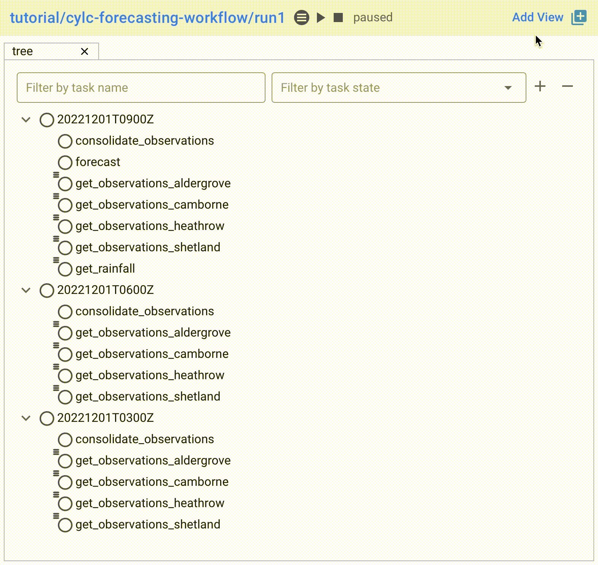
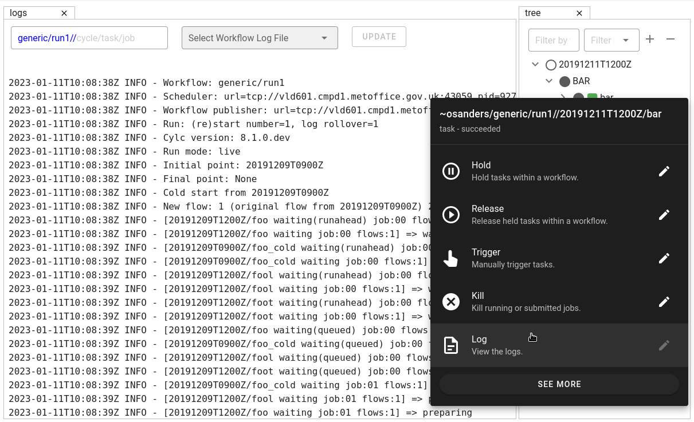

Changes
This page contains a summary of significant changes across all Cylc components for each
release.
For more detail see the component changelogs:
Cylc 8.2.0
Cylc Components
| cylc-flow: | 8.2 |
|---|
| cylc-uiserver: | 1.3 |
|---|
| cylc-rose: | 1.3 |
|---|
Configure The Default View
You can now configure the view which is opened by default when you navigate to
a new workflow in the GUI. Navigate to the settings page to select your chosen
view.

In the future we plan to support configuring a layout of multiple views and
configuring certain options on those views.
Reload
When workflows are
reloaded,
(e.g. by cylc reload), Cylc will now pause the workflow and wait for any
preparing tasks to be submitted before proceeding with the reload.
Once the reload has been completed, the workflow will be resumed.
You can now see more information about the status of the reload in the
workflow status message which appears at the top of the GUI and Tui interfaces.
Cylc 8.1.0
Cylc Components
| cylc-flow: | 8.1 |
|---|
| cylc-uiserver: | 1.2 |
|---|
| cylc-rose: | 1.1 |
|---|
Warning
Workflows started with Cylc 8.0 which contain multiple flows
cannot be restarted with Cylc 8.1 due to database changes.
Graph View
The web UI now has a graph view which displays a visualisation of a workflow’s graph:

Family & cycle grouping as well as the ability to view graphs for stopped workflows
will be added in later releases.
Log View
The web UI now has a log view which displays workflow and job log files:

Support for viewing more log files, syntax highlighting, searching and line
numbers are planned for future releases.
Edit Runtime
The web UI now has a command for editing the [runtime] section
of a task or family.

Any changes made are broadcast to the running workflow.
Analysis View
New in version cylc-uiserver: 1.2.2
The web UI also has a new view for displaying task queue & run time statistics.

Combined Commands
Two new commands have been added as short-cuts for common working patterns:
cylc vipValidate, install and plays a workflow, equivalent to:
cylc validate <path>
cylc install <path>
cylc play <id>
cylc vr- Validate and reinstall a workflow, then either:
- reload the workflow if it is running.
- restart the workflow if it is stopped.

For more information see the command line help:
cylc vip --help
cylc vr --help
Bash Completion
Cylc now provides a high performance Bash completion script which saves you typing:
- Cylc commands & options
- Workflow IDs
- Cycle points
- Task names
- Job numbers

Installation instructions.
Cylc 8.0.0
Cylc Components
| cylc-flow: | 8.0 |
|---|
| cylc-uiserver: | 1.1 |
|---|
| cylc-rose: | 1.1 |
|---|
The first official release of Cylc 8.
For a summary of changes see the migration guide.